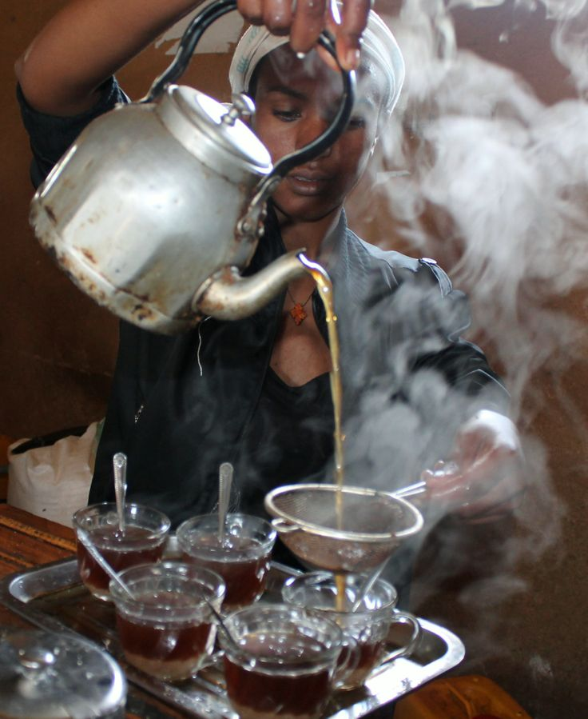

The Art of Spicing Shaah Cadays
Published June 26, 2026 | By Admin Kitchen Desk
True East African spiced milk tea stands out due to its balanced use of aromatics. Boiling loose black tea with freshly crushed green cardamon pods, dried ginger root chunks, and a hint of cinnamon bark unlocks oils that standard commercial tea bags cannot replicate.